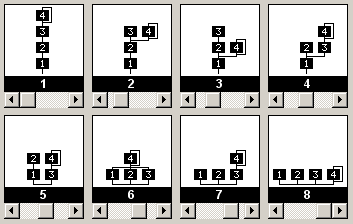

This control is for selecting the algorithm in the voice editor. It's pretty simple, you just use the scroll bar to set the value.
You can also use the six editing keys on the keyboard (Insert, Delete, Home, End, Page Up and Page Down) to set the value (see Keyboard Navigation).
You can also set the value by typing the algorithm number 1 through 8.
The control has to have the keyboard focus (the scroll bar has to be blinking) in order to use the keyboard on it.